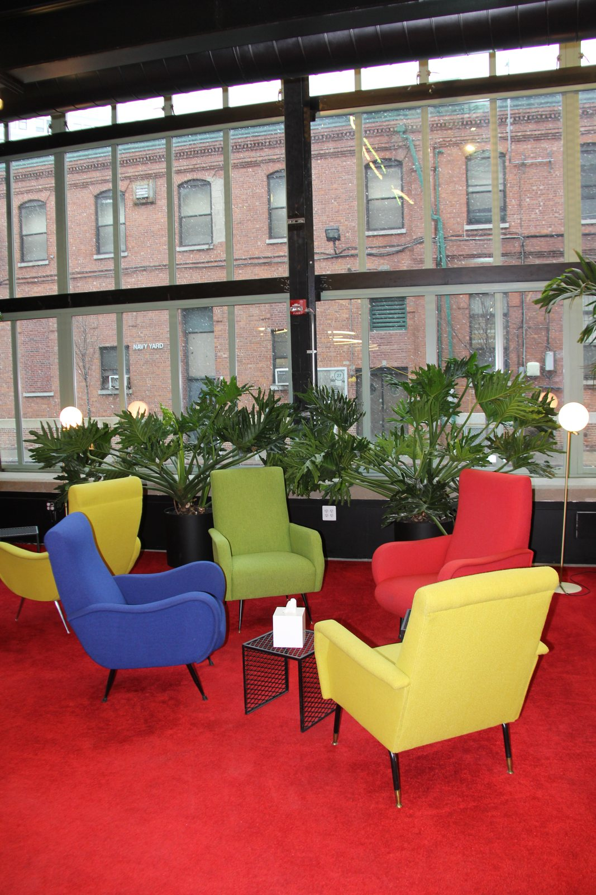

01どう動かしているのか。
常駐のProduct Realizationチームが設計・加工・試作を支え、金属・樹脂・電子・繊維・バイオ等の設備からNavy Yardの道路、水辺、建物へ接続する。NYC DOTのAI街路実証では、課題を標識点検、街灯、工事占用等に分け、3か月以内に投入できる試作品・製品を募集。採択後に技術・戦略担当が行政の現場職員と範囲、成功指標、データ条件、許認可を設計し、助成と参加企業の現物負担を組み合わせる。2025年募集の実証予定は2025年10月〜2026年1月で、募集は終了。2026年の創業者支援は別制度で、15の創業者・企業に12か月の拠点利用と伴走を提供する。公的な本調達は実証採択と別に判断される。
- 行政・企業の業務課題を公募テーマにする
- 試作専門家と現場担当が実証を設計
- 実環境で行動・運用・技術を測る
- 結果を公表し調達・事業化の条件へ変換
02誰が負担し、誰が担うか。
会員利用と企業・行政とのプログラム。2026 Founder FellowshipはNYCEDC、Bank of America、Gunderson Dettmerが協力し会員利用を支援。案件別支援総額・標準会費・収益配分は未確認。
制度やプログラムの財源と、各参加企業・地域に発生する費用は同じではありません。公開範囲を超える案件別予算・契約条件は未確認です。
03確認できたこと。
Brooklyn拠点は84,000平方フィート。常駐の試作専門家と300エーカー超のNavy Yard環境への接続を持つ。
読み取れる範囲：300エーカー全域をNewlabが所有・独占使用する意味ではない。
原典で確かめる ↗ 出典の説明 ↓NYC DOTとの2024年充電実証は118人を登録し、6か月で12,100回の電池交換を記録した。
読み取れる範囲：利用無料の実証。恒久有料サービスの採算や火災減少の因果効果を示す数字ではない。
原典で確かめる ↗ 出典の説明 ↓04日本で活かすなら。
本調査の分析：日本では、地域企業や自治体の実際の業務から課題を切り出し、買い手候補の現場担当、試作専門家、調達担当が同じ案件を持つ仕組みに転用できる。共創拠点はすべての設備を抱える必要はなく、大学工房、港湾、工場、道路管理者へアクセスする窓口を束ねる。入口で『何が測れれば次の発注判断ができるか』を合意し、助成金はその判断に必要な証拠づくりへ配分する。充電実証のように、住民・労働者の行動変化と、運営側の保守・設置・支払条件まで観察すれば、試作品の披露から公共サービスの設計へ進める。
05そのまま真似できないこと。
Newlab全体の企業数、資金調達額、企業価値をBrooklyn単独の効果に読み替えてはいけない。入居企業は選抜されており、非入居企業との比較もない。充電実証では方式・立地による利用差があり、充電ドック利用者の62%が終了までに利用をやめたとの記載もある。無料利用の高稼働を有料継続の証明とみなさず、設備維持、道路占用、保険、電池互換性、利用者負担を別途検証する必要がある。
06次に、何を確かめるか。
提案・未実施：自治体の1業務と現場責任者を確定し、試作企業2社を同一の現場条件で12週間比較する。導入後の月額費、点検時間、品質、対象者別の利用率を測定し、効果と発注可能額が一致した案件だけ次の競争的調達へ進める。実証後の予算責任者が決まらなければ拡大を止める。
07現場を、写真と動画で。

New Lab Brooklyn Shipyard IMG_8199 · 2017-01-31
PHOTO: dianaconnolly101 · 掲載元 ↗ · CC BY 2.0 ↗ · 撮影情報に従って向きを補正。縮小・表示枠に合わせた切り抜き。色変更なし。
冒頭写真：Newlab Brooklynの共用空間。旧造船所の鉄骨と天窓が残る内部（2017年撮影）。
公式サイトで、写真・最新の活動を見る ↗08原典を読む。
Newlab Continues Founder Fellowship to Build Community Among Critical Technology Startups ↗
2026年15社支援、支援主体、2席を含む12か月会員利用
Safer Charging, Safer Deliveries: Lessons from NYC DOT’s Public E-Bike Charging Pilot ↗
118人、無料、6か月、12,100回、方式・立地別の利用差